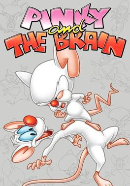

From the moment they were introduced in the Animaniacs story, “Win Big,” Pinky and the Brain became the most important laboratory mice in television history. It was the first time that the lovable, dimwitted Pinky would ask his best friend Brain, “What do you want to do tonight?” The reply, as any ‘90s junkie can still readily tell you: “The same thing we do every night, Pinky. Try to take over the world.” They’re laboratory mice, their genes have been spliced, and they would become so popular over Animaniacs’ early run that in 1995 The WB wanted Pinky and the Brain to not only be its own series, but also a cornerstone of the new network’s primetime schedule. Unfortunately, the two cartoon mice who wanted to take over the world couldn’t even conquer their time slot. After four years, a move to the Kids WB Saturday morning lineup, and some network tinkering, the quest to take over the world fizzled out. Perhaps the adult humor was too ahead of its time and simply too smart, or maybe the WB executives should have just stuck to counting the beans. Whatever the reason, Pinky and the Brain left a void in the hearts of both fans and cast members, as the actors who provided the voices for these mice and their cohorts still hold the series in high regard today.
While spending most of their lives in the Acme Labs research facility they often get out for the night in order to pursue their mission.